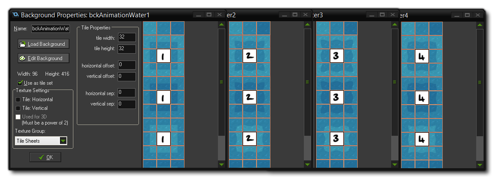

The animation scripts are used to create animated backgrounds by switch between different tiles on fixed depth. This "tileset animation" works by creating an array of backgrounds, where the entry [0] is the one
currently being drawn and the other array entries contain the individual "frames" for the animation. Each time the animation is updated, [0] is replaced by copying one of the static frame array values into it. An
array is also created to determine in which order these frames should be played, providing extra control without having to double up on background resources.
To create an animation set you will need a number of background resources, each with their own "frame" for the animation, as shown in the image below:  To initialise a tileset animation, you will need to call the function AnimationInit() which takes the following arguments:
| argument | Description |
|---|---|
| index | The index of the background array (starting at 0) |
| stretch | The number of steps to "stretch" each animation frame to |
| type | The type of animation to use (see the constants below) |
| background1 | The first background resource to use |
| background2, etc... | The second background to use (add further background arguments as required) |
The "index" value for the tileset animation is simply a value from 0 upwards and it will be used to define the array that is created for the backgrounds. The stretch value simply sets the number of game steps that each animation frame should be shown, and the "type" defines the way that the animation will progress. The types of animation are defined as globalvar constants in the object "objConstants" and can be any one of those shown below:
| Globalvar | Description |
|---|---|
| ANIMATION_LOOP | Simple a>b loop. |
| ANIMATION_BOUNCE | Bounces from the beginning to the end and back again as (a>b, b<a) |
| ANIMATION_SWING | Similar to bounce, only with a pause, as (a>b, b, b<a, a) |
Note that when defining the background resources to use for each frame of the animation, you can only add a maximum of 13 backgrounds (ie: frames).
As mentioned above, you can set the order of animations independently of how you initialise them (if you do not, then the argument order in which they have been initialised will be used), giving you more
control over them. This is a handy way to make the animation less obviously repetitive, which is something the player would quickly pick up on.
To set the animation order you use the script AnimationOrder(), which takes as it's arguments the animation index, and then the array position of each frame you wish to show. For example, if you
have something like this:
AnimationInit(1, 30, ANIMATION_LOOP, bckAnimationFlowers1, bckAnimationFlowers2);
AnimationOrder(1, 1, 2, 1, 1, 2);
In the above code, you are setting the tileset animation for the array [1] to show two backgrounds over 5 frames. You can see an example of how to set up the tileset animation system in the object
"objGame" Create event, where three different animations are initialised - one for the flowers, one for the torches and one for the water effects. Note that when setting the order of the
animation, you can only have up to 14 frames in a given set.
Tilesets won't animate themselves unfortunately, and so we need to use the script AnimationAnimate() to tell the engine which frame to show on any given step of the game. This script
simply takes the animation array index (as defined by the initialisation script, above) and should be called in the Step event of an object.
You can see an example of this in the object "objGame" Step event, and we would recommend that if you are creating your own animated tilesets, you simply add to this object
rather than create your own.